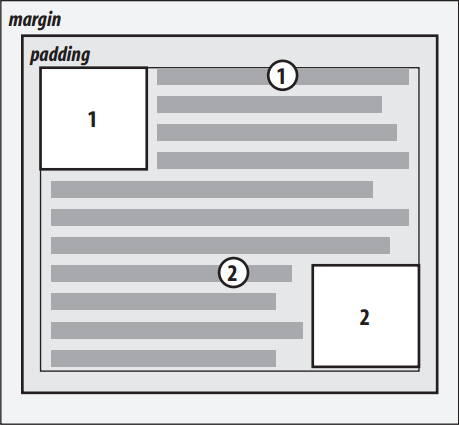
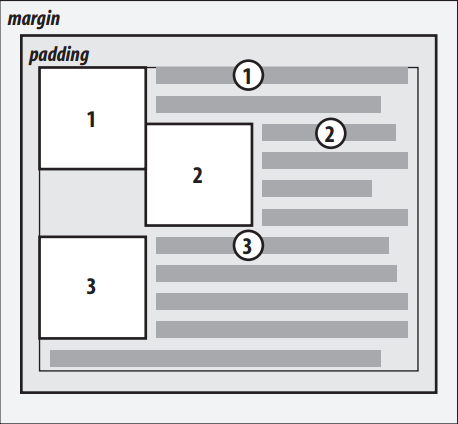
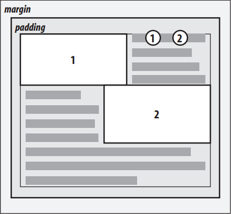
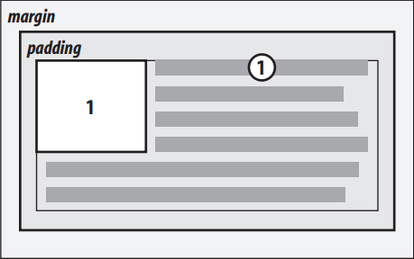
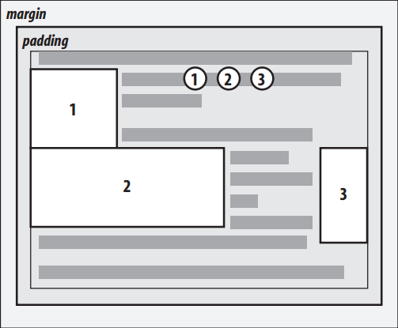
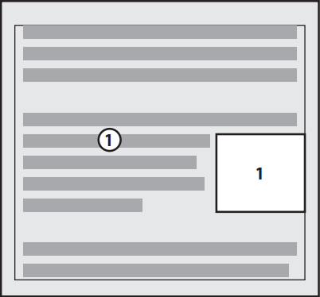
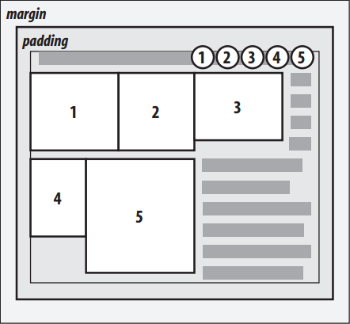
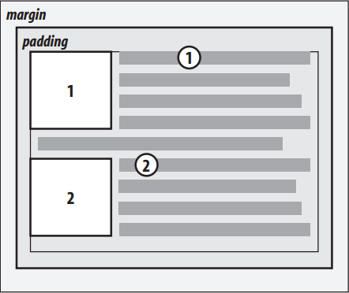
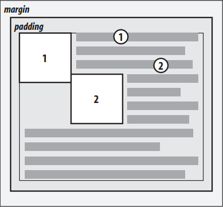

CSS浮动与定位
简述
CSS定位的基本思想很简单，它允许你定义元素框相对于其正常位置应该出现的位置，或者相对于父元素、另一个元素甚至浏览器窗口本身的位置。
在CSS中，正常的文档流是各元素一个接一个地排列，就像一群乖乖排队的小朋友。浮动就是把元素从文档流中移除，不参与排队。但被浮动的元素不是浮在空中，而是占据它的地盘，其他元素的内容只能绕道而行。
CSS浮动详解
浮动元素的摆放位置由一系列规则决定，这些规则如下：
-
浮动元素的左右边界不能超出其包含块的内边界。
 图1 向左（或向右）浮动 -
浮动元素的左右边界不能与前面的浮动元素的左右边界重叠，除非后出现的浮动元素的顶端在先出现的浮动元素的下面。
 图2 避免浮动产生重叠 -
一个右浮动元素的左边界不会在其左边任何左浮动元素的右边界的左边。
 图3 进一步防止重叠 -
浮动元素的顶端不会超出其父元素的内顶端。
 图4 浮动元素不能向上一直浮动 -
浮动元素的顶端不能比之前浮动元素的顶端更高
 图5 使浮动元素总在其之前浮动元素的下面 -
如果源文档中一个浮动元素之前出现另一个元素，浮动元素的顶端不能比包含该元素所生成框的任何行框的顶端更高。
 图6 使浮动元素在其上下文内 -
左浮动元素的左边有另一个浮动元素，前者的右边界不能超出其包含块的右边界。
 图7 如果没有足够的空间，浮动元素会被挤到新行 -
浮动元素必须尽可能高地放置。
 图8 满足其他约束条件的前提下，浮动得尽可能高 -
左浮动元素必须向左尽可能远，右浮动元素必须向右尽可能远。
 图9 向左尽可能远